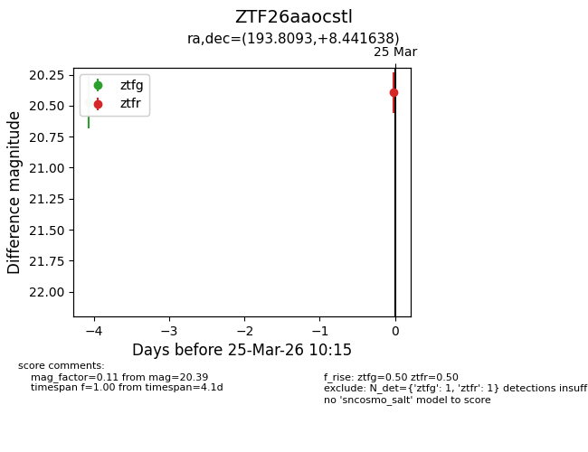
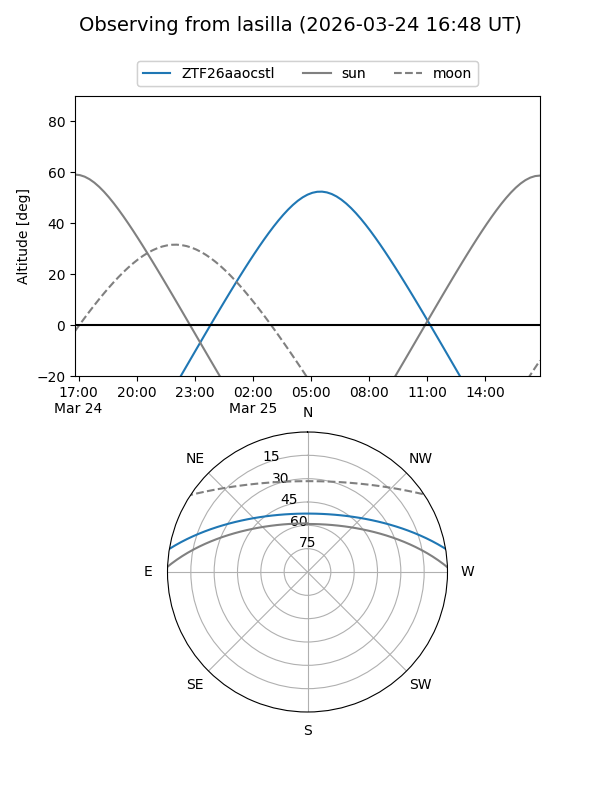
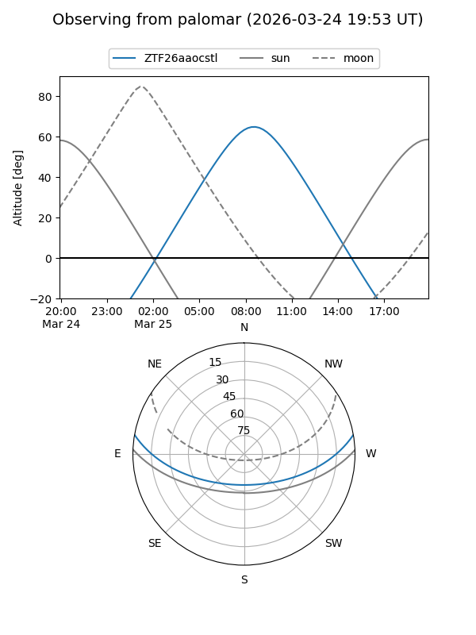

ZTF26aaocstl
Target ZTF26aaocstl at 2026-03-25 10:18
Aliases and brokers:
FINK: link
Lasair: link
ALeRCE: link
alt names
ZTF26aaocstl (ztf,fink_ztf)
Coordinates:
equatorial (ra, dec) = 193.8093,+8.44164
equatorial (HMS+DMS) = 12:55:14.23,+08:26:29.90
galactic (l, b) = (305.8622,+71.29177)
Flags:
Photometry:
last ztfg=20.47, ztfr=20.39
1 ztfg, 1 ztfr detections
Lightcurve

Visibility


Additional plots